この動画で伝える一文
「AIが作ったから伝わらない」と感じる人に、読む資料と発表用を分け、画面に残す要点と自分が語る文脈を設計する大切さを伝え、自分で届け方を変えられるという手応えを残す。
01の「頭に、入らない。」から、02の「語りを、設計する。」へ。05で実物の役割の違い、06–08で文字と声の分担、09で本人の実践を示し、10の「聞き手に、届ける。」で閉じます。文字の少なさそのものを目的にしません。
留保は04に集約します。手元で読む資料には必要な情報を残し、読みやすく整理する。06では短い語句が助けになる条件も伝えます。最後は本人の意思と実践で結び、全員への成功保証や問いかけに置き換えません。
視聴者
AIで資料を作る人、発表で文章を追ってしまい話が入ってこなかった人。見終わったあと、「画面には何を残すか」「自分の声で何を補うか」を考え、話す順序と練習へ時間を使えるようにします。
構成と尺
声は理由・留保・本人の実践を、文字は主張と要点を、実物画像は用途による紙面の違いを受け持ちます。模式図は情報を選び、順序を組み直し、語りが画面の外へ広がる過程を示します。
本編130秒、全体135.5秒の配分案です。声は596字。5.6字/秒を仮の読み速度とすると約106.4秒です。05の比較を21秒、09の実践を19秒取り、08の例示は11秒に絞ります。語の読み・間によって実測は変わるため、制作側が声と画を合わせて調整します。全文字幕は足しません。尺調整では03の導入説明から詰め、04の留保、05の比較、09の実践、10の結論を残します。3分には伸ばしません。
| カット | 区間 | 役割 | 声／画面 |
|---|---|---|---|
| 01 頭に、入らない。 | 0:00–0:08（8秒） | 体験から入る | 37字／8字 |
| 02 語りを、設計する。 | 0:08–0:18（10秒） | 主張 | 46字／9字 |
| 03 この言葉は、要る？ | 0:18–0:26（8秒） | 作り手の判断 | 42字／17字 |
| 04 読む資料には、必要な情報を。 | 0:26–0:35（9秒） | 用途による留保 | 43字／15字 |
| 05 実物で、役割を見比べる。 | 0:35–0:56（21秒） | 実物比較 | 84字／49字 |
| 06 長文は競合する。要点は助けになる。 | 0:56–1:13（17秒） | 理由と研究の範囲 | 81字／11字 |
| 07 画面の要点から、自分の言葉へ。 | 1:13–1:23（10秒） | 話し方との関係 | 52字／20字 |
| 08 語りがあるから、削れる。 | 1:23–1:34（11秒） | 例示 | 54字／3字 |
| 09 伝える時間に、使う。 | 1:34–1:53（19秒） | 本人の実践 | 81字／27字 |
| 10 聞き手に、届ける。 | 1:53–2:10（17秒） | 本人の結論 | 76字／19字 |
| 11 エンドロゴ | 2:10–2:15.5（5.5秒） | 制作表示 | 0字／0字 |
字数は空白・改行を除き句読点を含みます。画面は各カットの「画面の文字」に掲げた文言の合計。実物画像内の文字・ロゴは含めません。同一文言の再登場はカットごとに数えます。
カット表・絵コンテ
各カットの開始・終了を画像で示し、05は比較中のコマも加えます。コマ画は構図の設計資料です。番号・はじめ／おわりは画像の外だけに記載します。図形と文字の層を使い、カットごとに「開く・選ぶ・比べる・分担する・組み直す」の動きを変えます。
秒数・位置・角度は参考値です。制作側は動きの狙いと可読性を満たす方法を選べます。大きな画面運動を入口と出口だけに限定しません。
頭に、入らない。
0:00–0:08 / 8秒 ・ 体験から入る ・ 声37字／画面8字

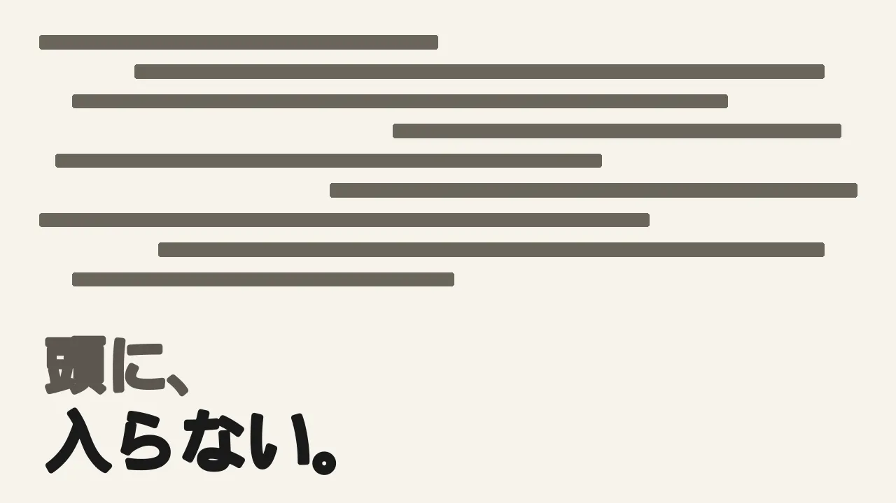

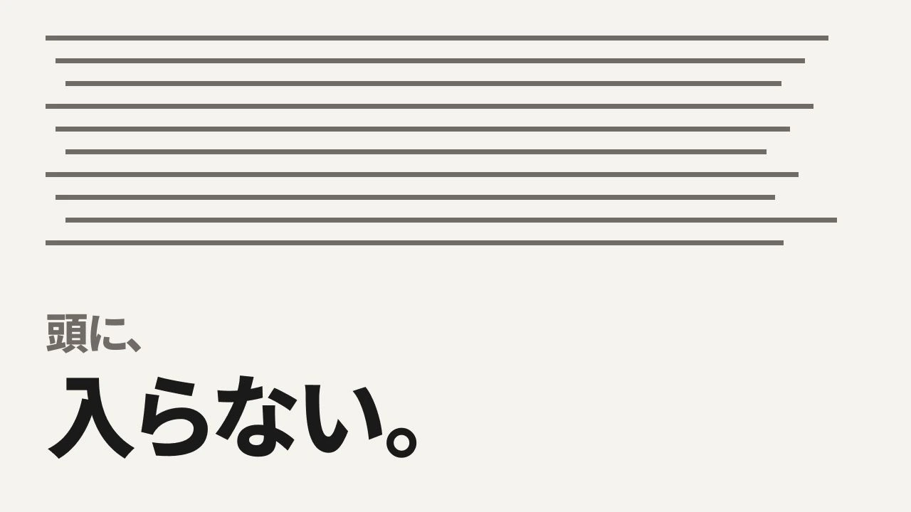
頭に、
入らない。
AIが作ったスライドを見て、頭に入ってこない、と疲れたことはありませんか。
上の密度と下の大きな二行。字を散らさず、圧迫される余白で負担を感じさせます。
- 奥に重なった文章面が、画面幅いっぱいに手前へ迫る。主役の「入らない。」は行のマスクから大きく入る。
- 読む間も面と文字の塊を異なる速さで流し、上の密度が増す。カメラの寄りは図の層に掛ける。
- 最後の面が左右に割れ始め、その開口を02へ渡す。
図形と文字。灰の線は文章量の模式表現です。
語りを、設計する。
0:08–0:18 / 10秒 ・ 主張 ・ 声46字／画面9字

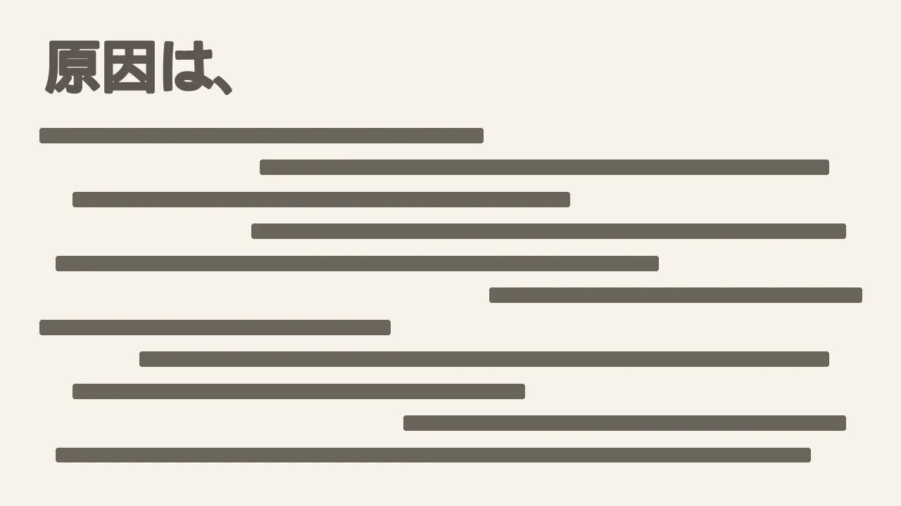

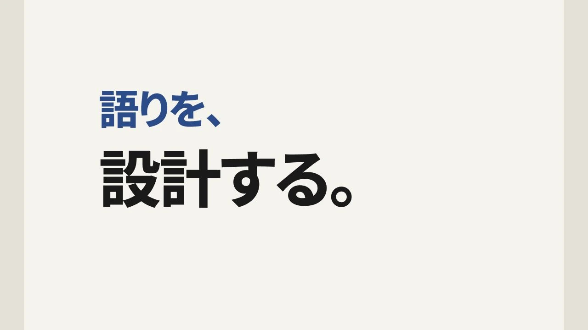
語りを、
設計する。
大事なのは、聞き手に届く語りの設計です。画面に何を残し、何を自分の言葉で伝えるかを決めます。
壁の細い開口から、二行を読める広い空間へ。単語だけでなく、何を設計するかまで画面に残します。
- 01の文章面を扉のように左右へ開く。近い面ほど大きく動き、開いた空間に図のカメラが進む。
- 「語りを、」に続いて「設計する。」が面の開きと逆方向からせり出す。読む間も二行を一つの塊として寄せる。
- 右側に退いた面を03の文章面へ向けて押し出す。ここは一行ずつ剥がす動きにしない。
図形と文字。左右の面は字幕の背景ではなく、開く空間の前景です。
この言葉は、要る？
0:18–0:26 / 8秒 ・ 作り手の判断 ・ 声42字／画面17字

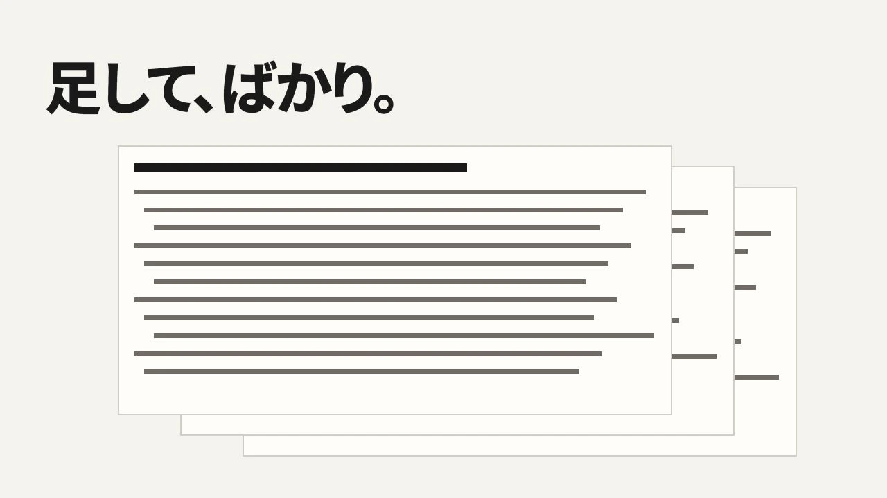

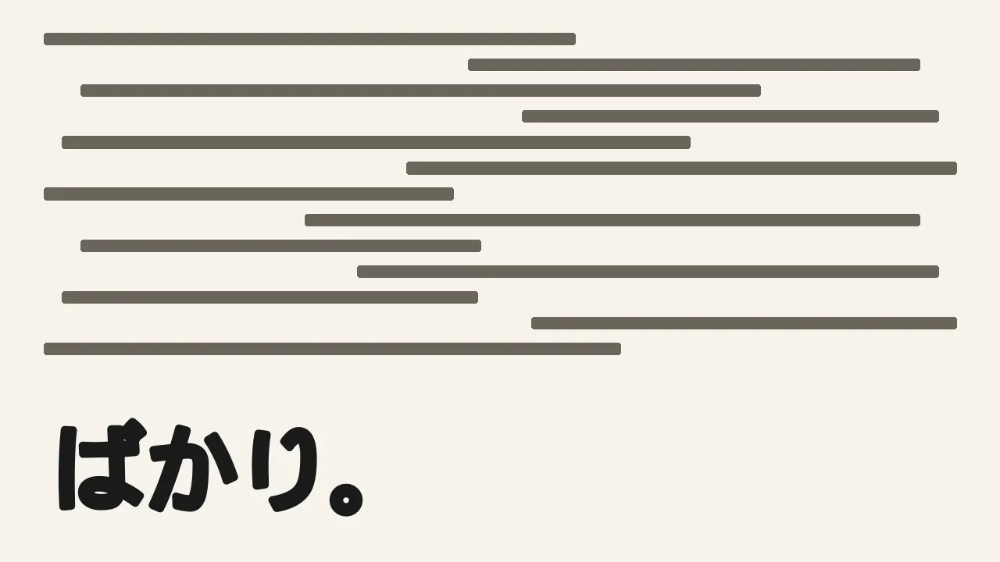
足して、ばかり。
この言葉は、要る？
AIの出力は、説明を詰め込みがちです。この言葉が本当に要るかを、作り手が吟味します。
上に足される文章から、残す文章を選ぶ左右の配置へ。AIに削除能力がないという断定にはしません。
- 面が上から積み上がり、「足して、ばかり。」の行を下へ押す。文字そのものは変形させない。
- 一つの面が前へ出て、残す面と見送る面が左右へ移る。「この言葉は、要る？」を広い一行で置く。
- 残した面を04の手元の資料へ畳み、横移動の勢いを引き継ぐ。
図形と文字。選択は情報の要否であり、ランダムに消す演出にしません。
読む資料には、必要な情報を。
0:26–0:35 / 9秒 ・ 用途による留保 ・ 声43字／画面15字

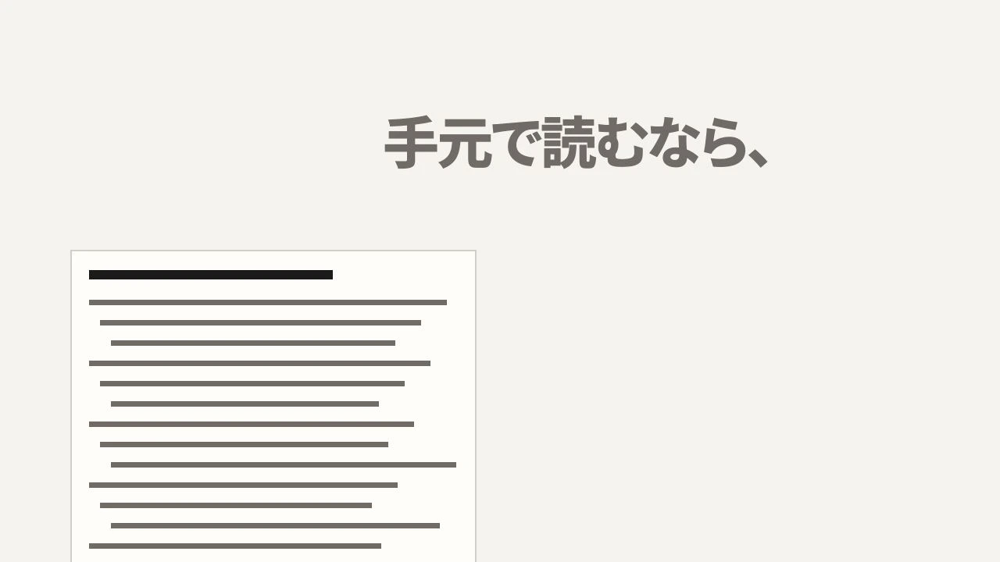

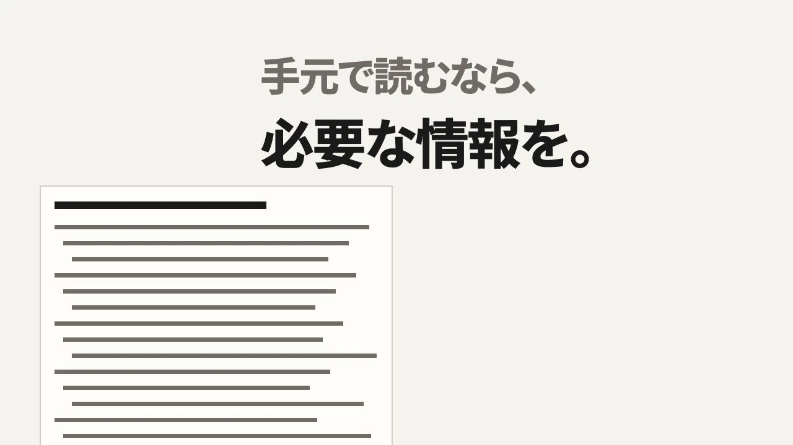
手元で読むなら、
必要な情報を。
読む資料には、必要な情報を残します。文字が多くても、読みやすく整理することが大切です。
紙面を左下、留保を右上に置く非対称。必要な情報を残すことと、読みやすく整えることを一緒に伝えます。
- 03で選ばれた面が一枚の紙面へ畳まれ、大きな斜め移動で左下へ収まる。
- 紙面内の行が見出しごとにまとまり、余白が開く。文字の塊は紙面と逆方向へ流れ、留保を読める時間を取る。
- 紙面を手前へ広げ、05の実物の一覧にマッチさせる。
模式図。本人素材は05で初めて使います。
実物で、役割を見比べる。
0:35–0:56 / 21秒 ・ 実物比較 ・ 声84字／画面49字

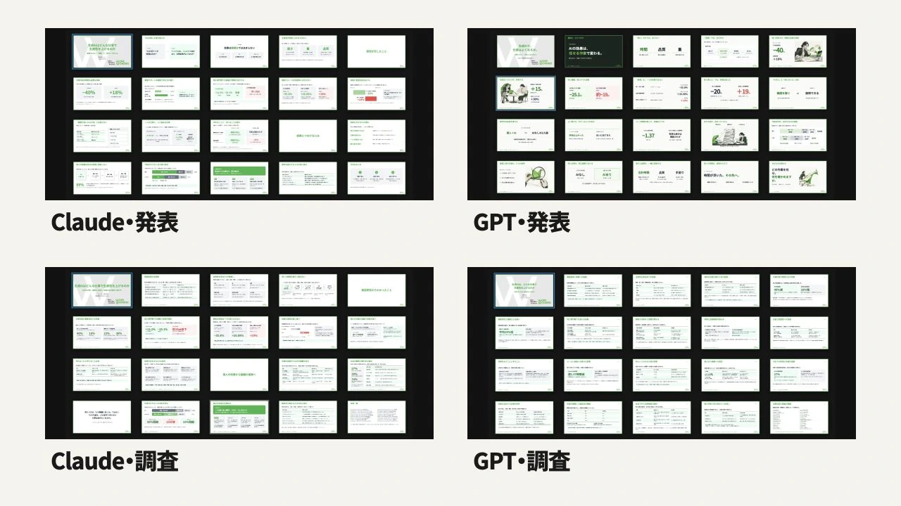

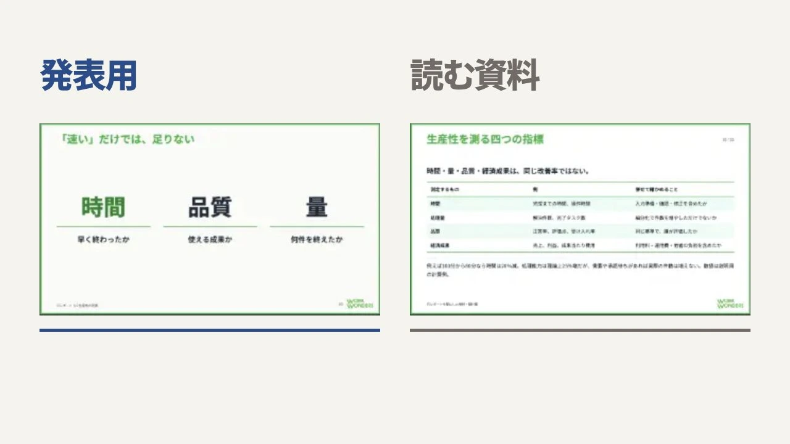

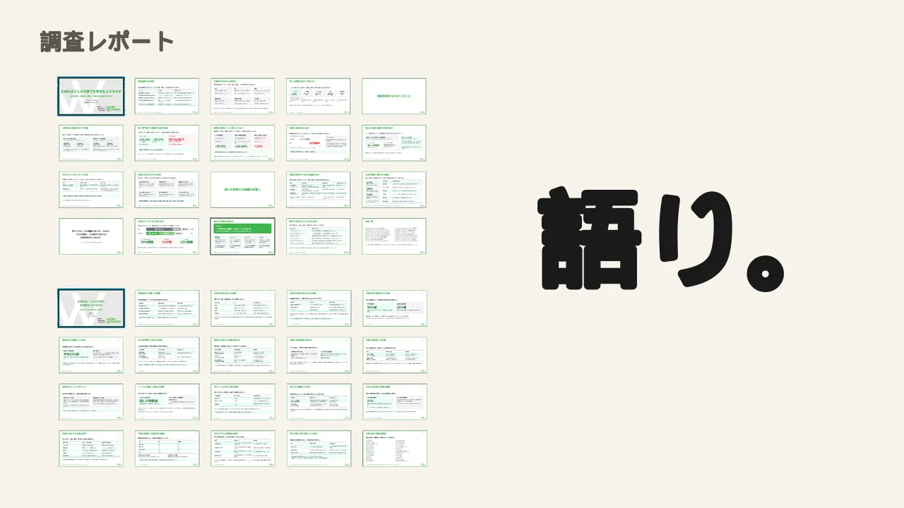
Claude・発表
GPT・発表
Claude・調査
GPT・調査
発表用
読む資料
要点を見せる
説明まで残す
同じテーマで作った、発表用と調査用の四種類です。注目するのは、使う場面。同じ論点でも、発表用は要点を見せ、読む資料は説明まで残す。画面だけでどこまで伝えるかが違います。
最初の一覧は存在を示す導入。主画面はGPTの同じ論点の二ページです。製品の優劣や全ページの品質は判定しません。発表用にも整理されたページがあることを、そのまま見せます。
- 参考0–4秒：四種類を一度に見せる。ラベルを読ませ、細かな本文は読ませない。画像を傾けて比較を難しくしない。
- 参考4–7秒：GPTの上下二枠を大きく前へ引き出し、各一覧の1行3列目へ寄る。そのまま左右の二面へ組み替える。
- 参考7–17秒：同じ論点の二ページを主画面にする。左の大きな三語、右の見出し＋説明という階層を順に外枠で示す。ページの内容や数字は変更しない。読む間は二面をまとまりとして緩やかに移動する。
- 参考17–21秒：二面を上に持ち上げ、下に「要点を見せる」「説明まで残す」を置く。右の文章のまとまりが06の「読む」へ、左の要点が06の結びへつながる。
採用済みの本人画像4枚。比較ページはGPT発表・GPT調査とも1行3列目、切り取りは素材表の座標を使う。元画像は改変しない。
長文は競合する。要点は助けになる。
0:56–1:13 / 17秒 ・ 理由と研究の範囲 ・ 声81字／画面11字

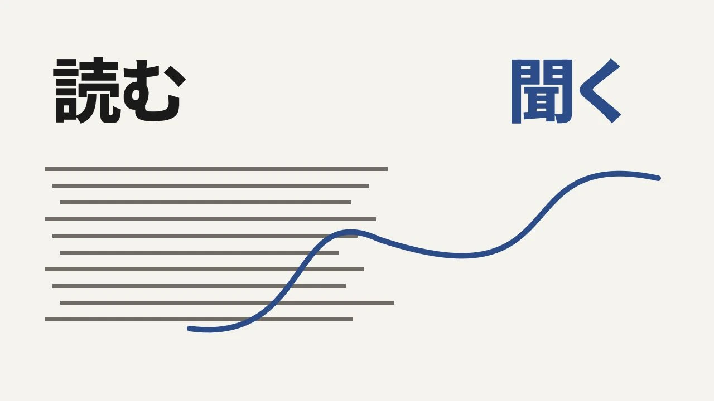

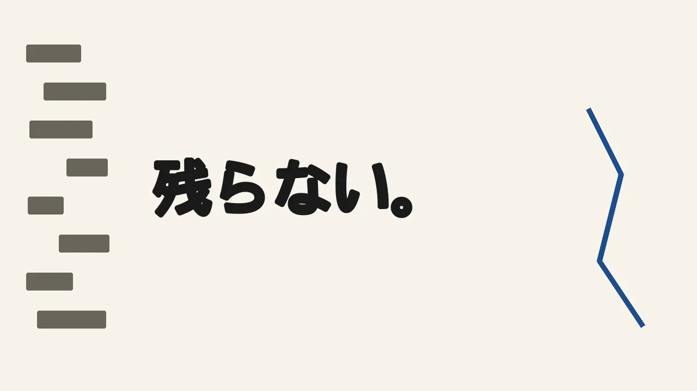
読む
聞く
要点を、残す。
長い文章を読みながら話を聞くと、理解を妨げることがあります。一方、図のそばに短い語句を添えて、記憶を助けた研究もあります。文字をなくすのではなく、要点を残します。
はじめは注意の競合、終わりは図と短い語句が対応する配置。研究結果を「必ず残る／全く残らない」という二択にしません。
- 長い文章面と語りの線が反対方向から中央へ入り、視線の行き先が重なる状態を見せる。爆発や破壊で記憶がゼロになったように描かない。
- 文章面が横へ整理され、図の近くに残る短い「要点」の塊へ視線を誘導する。読む負担の説明から、語りを助ける配置へ大きく組み替える。
- 「要点を、残す。」を二行で寄せ、青い線が図の外を通る。07の語りの経路へその線を渡す。
図形と文字。研究の対象・結果・限界は references.md。グラフや効果量は映像に出さない。
画面の要点から、自分の言葉へ。
1:13–1:23 / 10秒 ・ 話し方との関係 ・ 声52字／画面20字

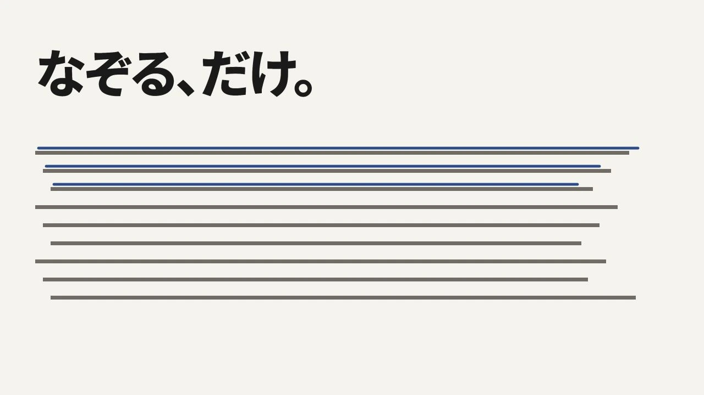

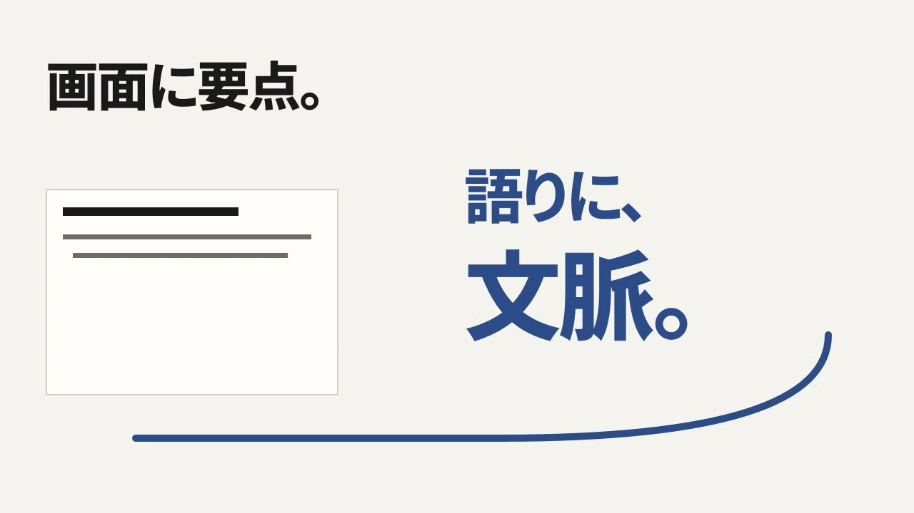
なぞる、だけ。
画面に要点。
語りに、文脈。
画面の文章が多いと、発表も読み上げに寄りがちです。画面には要点を残し、経験や文脈は自分の言葉で語ります。
画面と話す空間の大小を逆転させます。青い線は発表者そのものではなく、語りの流れを示します。
- はじめは文章の段に沿って、青い線が同じ経路をなぞる。カメラもその窮屈な幅を追う。
- 画面を左へ縮める一方、青い語りの線は画面の外へ大きく展開。「画面に要点。」と「語りに、文脈。」が異なる面から入る。
- 小さな画面と広い語りを保ったまま全体を右へ流し、08の広い余白に渡す。
模式図。実物の画像や人の姿は使わない。
語りがあるから、削れる。
1:23–1:34 / 11秒 ・ 例示 ・ 声54字／画面3字

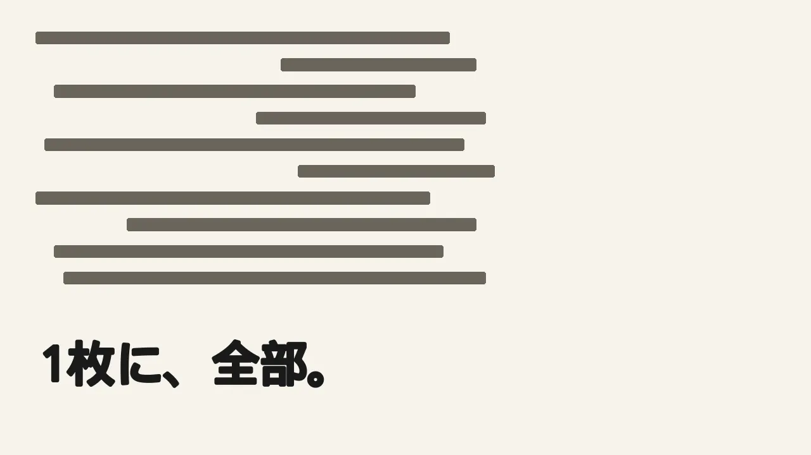

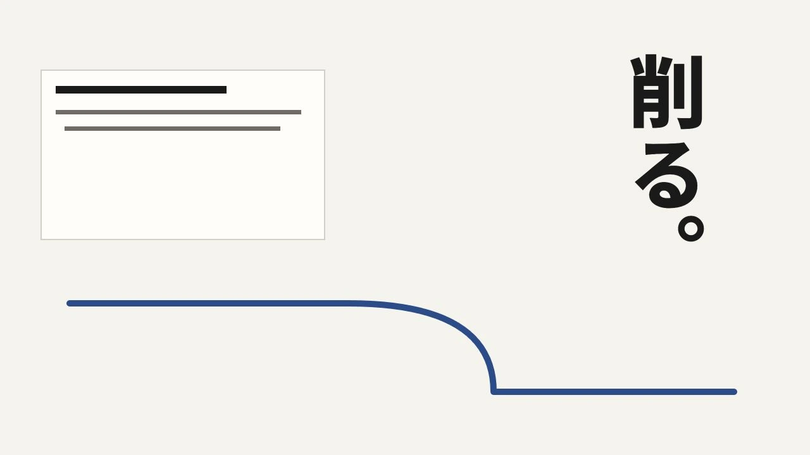
削る。
スティーブ・ジョブズのプレゼンのように、文字を削れるのは、その場の語りがあるから。削った先を、話で届けます。
画面の文字は、最初から最後まで縦の「削る。」だけ。人名は声のみ。手元で読む資料の留保は04に集約します。
- 左の文章面を一行ずつ抜き、その跡へ青い語りの経路を広げる。なくなる情報ではなく、声が受け持つ空間を見せる。
- 縦の「削る。」を塊のまま大きく引き寄せ、青い経路は画面幅を使って進む。読みの区間も広がり続ける構図。
- 青い経路が09の話す順序を結ぶ道へ変わる。
図形と文字。ジョブズの映像・写真・似顔・画面の人名は使わない。
伝える時間に、使う。
1:34–1:53 / 19秒 ・ 本人の実践 ・ 声81字／画面27字

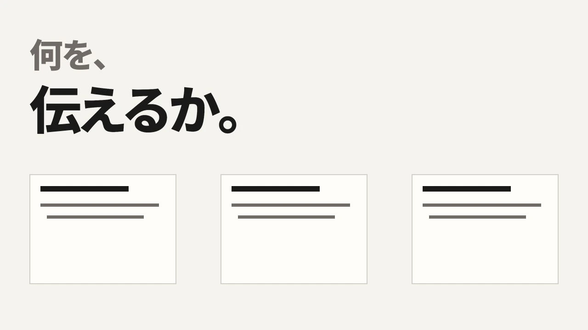

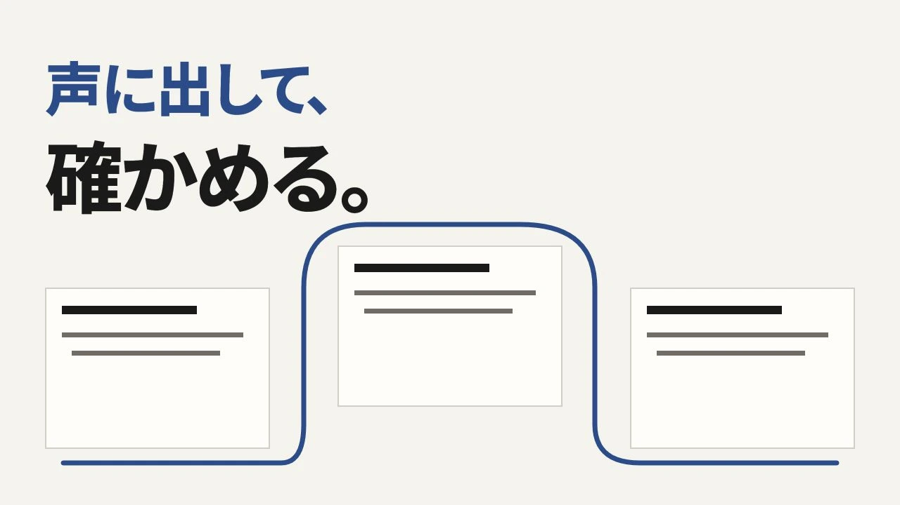
何を、伝えるか。
順序を組み直す。
声に出して、確かめる。
私がAIに任せたいのは、体裁を整える作業です。浮いた時間で、何を伝えるかを考える。出力に目を通して話す順序を組み直し、スクリプトを用意して、声に出して練習します。
前半は大きな問いと未整理の話題、中盤は順序、後半は読み上げの確認。三つの文言は順番に表示し、一覧のチェックリストにはしません。
- 「何を、伝えるか。」が画面幅を使って入る。下の話題の面が一つ手前へ、ほかが奥へ動き、重要度の差をつくる。
- 「順序を組み直す。」へ行マスクで入れ替え、話題の面が位置を交換する。カメラも並びの変化に大きく追従する。
- 「声に出して、確かめる。」へ移り、青い語りの経路が話題を順番に結ぶ。一度戻って接続を整え、通して話す流れへ。字は拍ごとに揺らさない。
- 最後に整った並びが10の二つの完成形へ分かれる。
図形と文字。模式の面はスライド画像ではなく、話題の単位。個数や順序を普遍的な方法として教えない。
聞き手に、届ける。
1:53–2:10 / 17秒 ・ 本人の結論 ・ 声76字／画面19字

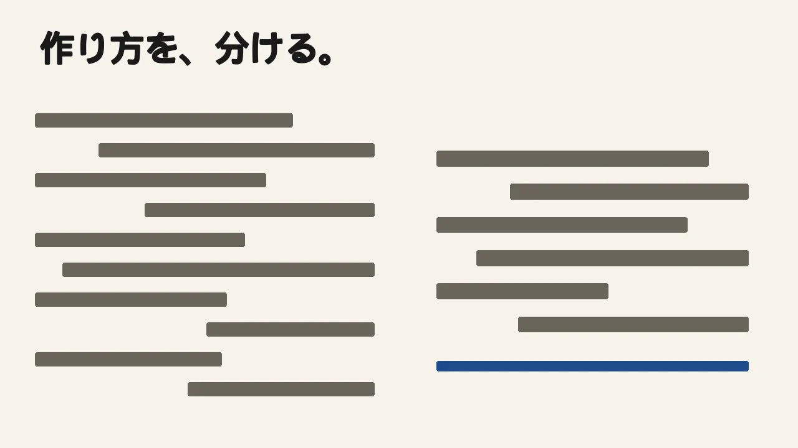

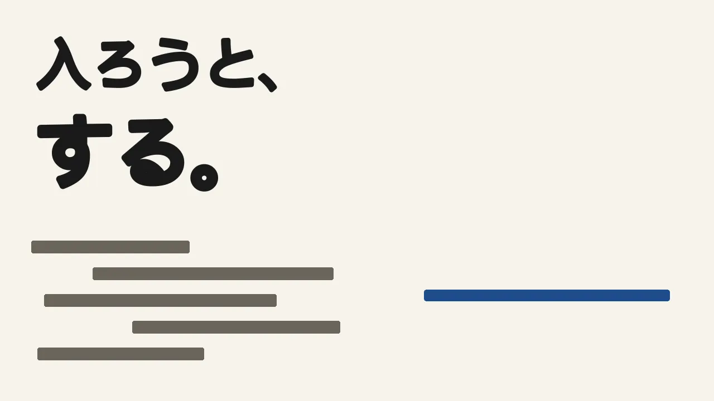
読む資料
聞くスライド
聞き手に、
届ける。
AIは作業の相棒です。心を動かす責任は、代わってくれません。だから私は、読む資料と話を補うスライドを作り分け、語りを磨いて、聞き手の頭に入ろうとします。
左も右も完成形です。右を空白にはせず、要点のある画面と、その外へ広がる語りを残します。上の二行で本人の意思を結びます。
- 09から分かれた二つの面が左右で展開。読む資料は紙面が開き、聞くスライドは要点と語りの経路が一緒に伸びる。
- 両側を一体の構図として下へ送り、上から「聞き手に、届ける。」を大きく押し出す。読む間は左右の完成形を異なる奥行きで動かし続ける。
- 声の結びと文言を受け取る間を取ったあと、画面全体を横へ振り、ライムの全面へ渡す。白フラッシュは使わない。
図形と文字。01の「入らない。」を、本人の「届ける。」という意思で閉じます。
エンドロゴ
2:10–2:15.5 / 5.5秒 ・ 制作表示 ・ 声0字／画面0字

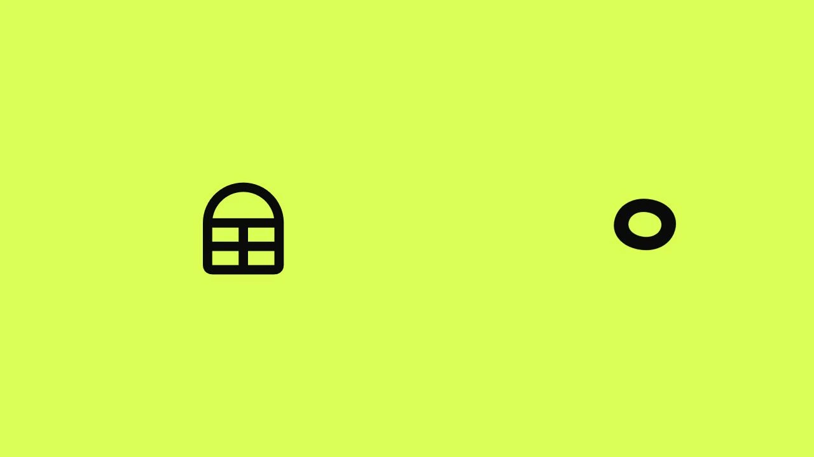

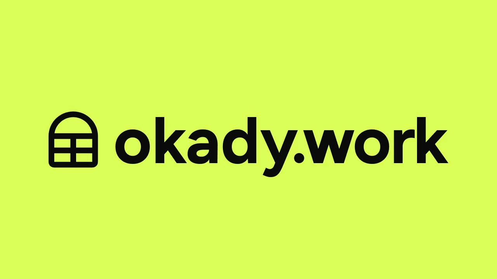
なし（ロゴのみ）
なし
背景 #d2ff1a、ロゴは中央。形・書体・色・比率を変えず、安全域内に置きます。
- 0–2.6秒：原本SVGの o の落下・バウンド・定位置への移動と文字の出現を再現。
- 2.6–3.2秒：全体が左へスライド。3.0–4.0秒：「.work」が一文字ずつ出現。
- 4.0–5.5秒：完成状態を1.5秒保持し、BGMもここで収める。
リポジトリ直下の okady-work-logo.svg。フレーム時刻から再現します。
詳細（ここから下は補足）
声・文字・素材の分担
| 担当 | 受け持つこと | 扱い |
|---|---|---|
| 声 | 理由、研究の条件、本人の経験・実践・結論 | 画面の短い語と意味を合わせるが、画面全文の朗読にはしない。 |
| 文字 | 聞き手の疑問、決め語、04の留保、09の実践 | 短さだけを目標にしない。主語・対象が必要な場面は二行まで使う。 |
| 模式図 | 文章量、残す判断、画面と語りの分担、話す順序 | 線の本数を実測値に見せない。語りは青い経路、画面内の要点は墨。 |
| 本人資料 | 05で四種類の全体像と、同じ論点のページ比較 | 数値の正しさ・製品の優劣を論じる材料にはしない。 |
ナレーションありの構成です。音声制作は制作側の担当であり、音源の未同梱は企画の引き渡しを止める理由にしません。
主張・根拠・留保の対応
| 役割 | 内容 | カット |
|---|---|---|
| 主張 | 画面に要点を残し、語りを設計して聞き手に届ける。 | 02・07・10 |
| 実例 | 本人が作った四種類を示し、同じ論点の情報階層を比較する。 | 05 |
| 研究 | 長文と語りは競合しうる。短い語句が記憶を助けた条件もある。 | 06 |
| 留保 | 読む資料には必要な説明を残し、整理する。文字の削除自体を目的にしない。 | 04・06 |
| 本人の実践 | 何を伝えるかを考え、出力を確認し、順序を組み直して練習する。 | 09 |
| 結論 | AIは相棒。用途で作り分け、語りを磨く責任は本人が持つ。 | 10 |
企画側／制作側
| 企画側で用意するもの | 制作側で仕上げるもの |
|---|---|
| 現行の文言・声の原稿・配分案、絵コンテ23枚、本人資料4枚、採用ページと切り取り座標、フォント・利用条件、原稿と研究の対応 | three.jsと文字層の実装、細かな動き・同期、声・BGM・効果音、代表区間の試作と全編書き出し |
| 静止コマの文字配置・素材参照の点検 | 動いている全カットの文字の安全域・重なり検査、実速再生、音の終わり方の確認 |
企画と素材の準備をこの一式で行い、音声と本編は制作側が担当します。追加の画像・動画が必要になったら、必要な内容を企画側へ返します。
デザインシステム（動画本編）
明るい紙色 #F6F3EC、墨 #1A1A1A、灰 #5C564E、語りの青 #1E4D8C。ライム #d2ff1a はロゴだけに使います。文字は同梱の Noto Sans JP、見出し700–900・補足400。企画書のDADSの配色とは別です。
| 段 | 1920×1080の参考値 | 用途 |
|---|---|---|
| 大きな語 | 180–250px | 02の「設計する。」、08の「削る。」、10の「届ける。」 |
| 主文 | 100–150px | 04の留保、06の要点、09の実践 |
| 短いラベル | 48–64px | 05の資料種別、07・10の用途ラベル |
12列、外側余白96pxを目安にします。文字の安全域は左右64px・上下48px。1280×720の絵コンテでは左右48px・上下36pxを取ります。01–03は面の圧迫と開口、04は斜めの非対称、05は実物の左右比較、06は交差から対応づけ、07は画面と語りの大小逆転、08だけ縦書き、09は並べ替え、10は二つの完成形と大きな結びです。
動きの言語
| 動作 | 意味と使う場所 | 読む間・次へのつながり |
|---|---|---|
| 開く・選ぶ | 02で語りの設計へ視界を開き、03で必要な言葉を選ぶ。 | 文字の塊を寄せ続け、残した面を04へ渡す。 |
| 引き出す・比べる | 05で一覧から同じ論点の二面へ大きく寄る。 | 比較中は傾きを戻し、二面全体の移動と順番の外枠で視線を導く。 |
| 分担する | 06・07で文章と語りの経路を分け、要点と文脈を対応づける。 | 片側を縮め、もう片側が画面外へ広がる構図を使う。 |
| 剥がす | 08で説明の面を抜き、声が受け持つ空間を広げる。 | 縦の語と経路の拡大が続き、09の順序へつながる。 |
| 組み直す・展開する | 09で話題の順序を変え、10で二つの用途の完成形を展開する。 | 平行移動だけでなく前後関係・重心を大きく入れ替える。 |
拍の目安は104–112 BPM。語の強い着地と面の転換を音楽のアクセントに合わせ、比較・留保の区間にも流れを残します。一文字ずつの常時の揺れ、拍ごとの脈動、文字の崩壊は使いません。文字を読ませるために全画面を静止させるのではなく、文量・動かす層・構図を調整します。イージングの値と秒単位の同期は制作側の裁量です。
記号と色
| 記号 | 意味 |
|---|---|
| 灰の文章面・横線 | 文章量。密度が高いこと自体を悪とはせず、04・10では整理された資料として残す。 |
| 墨の短い語・小さな面 | 画面に残す要点。09の面は話題の単位。 |
| 青い経路 | 自分の声で運ぶ語り。人物や音量のグラフではない。 |
| 実物の緑・白・黒 | 本人資料の原本の色。映像全体の意味色とは分け、変更しない。 |
| 紙の余白 | 語りへ注意を向ける空間。右側を完全な空白にすることを完成形にしない。 |
キャラ設定
人物・顔・手を新たに描きません。発表者と聞き手の関係は、画面の要点と語りの経路で示します。本人資料に元から含まれる人物画は資料全体の一部として扱い、切り出して登場人物にはしません。
素材の方針
生成映像は使いません。必要なのは資料の比較と情報の再配置であり、本人資料の静止画像を編集で動かし、文字・図形と組み合わせる方法を採ります。写真・ストック動画・3D人物の追加では、この比較の精度は高まらないため採用しません。モーショングラフィックスの図形は制作側が実装します。
採用素材と使う区間
| ファイル | 役割 | 使用区間と切り取り |
|---|---|---|
| 2026-11-07_14-53-52.webp | Claude・発表 | 05の参考0–4秒：一覧全体を比率維持で表示。それ以後は画面から退出。 |
| 2026-11-07_14-54-08.webp | GPT・発表 | 05の参考0–4秒：一覧全体を比率維持で表示。参考4–21秒：1行3列目を拡大。原本座標 x=800, y=40, 幅=321, 高さ=181。 |
| 2026-11-07_14-53-59.webp | Claude・調査 | 05の参考0–4秒：一覧全体を比率維持で表示。それ以後は画面から退出。 |
| 2026-11-07_14-52-40.webp | GPT・調査 | 05の参考0–4秒：一覧全体を比率維持で表示。参考4–21秒：1行3列目を拡大。原本座標 x=800, y=40, 幅=321, 高さ=181。 |
assets/storyboard/cut-XX-start.webp / end.webp と cut-05-mid.webp | 絵コンテ23枚 | 本編に貼り込む完成素材ではない。 |
assets/fonts/NotoSansJP-wght.ttf・NotoSansJP-OFL.txt | 文字と利用条件 | 全カット。同梱のOFLに従う。 |
| okady-work-logo.svg | エンドロゴ | 11全区間。リポジトリ直下の原本に依存するので、一式を移すときもこの相対位置を維持。 |


本人資料4枚は記事内で本人が作成した実例。新たな第三者素材の取得はありません。元画像の文字・色・数字・ロゴを改変しません。GPT比較は、発表用「『速い』だけでは、足りない」と調査用「生産性を測る四つの指標」。共通の時間・品質・量という論点について、短い語と説明表という階層の違いを見ます。項目数の一致、同じ内容の完全比較、製品性能の比較は主張しません。
元画像は1920px幅の一覧です。採用ページの切り取りは約321×181pxで、高精細な本文閲覧用ではありません。絵コンテでは左右各約520px幅に拡大し、大きな語と説明の配置を確認します。細かな本文・数字を読み取らせる寄りやナレーションにはしません。資料の見出しは外側のラベルと混ぜず、切り取り範囲の中へ新しい字を足しません。
音
BGMはこの作品のために制作します。乾いたリム、短いウッド、輪郭のあるプラック。104–112 BPMを目安に、02の開口、05の一覧から比較への展開、07の語りの広がり、09の並べ替え、10の結びを支えるアクセントを作ります。
05の比較中は音の層を少し減らして視線を誘導し、09で再び推進力を上げます。曲を遅くして画の動きを弱めません。ナレーションは落ち着いた会話調で、比較の前後と04の留保に間を取ります。読みの候補は「四種類＝よんしゅるい」「体裁＝ていさい」「語り＝かたり」。
音源はロゴの終わり2:15.5まで覆い、最後の1.5秒で収めます。効果音は面の移動と語の着地に必要な分だけ付けます。冒頭・05–07・09–11で画と合わせて試聴し、声を隠さないことと運動感を確認します。
声・BGM・効果音のファイルは制作側が用意します。有料音楽生成の候補はLyria 3.5（名称はユーザー指定の候補で、実行時にモデルID・提供状況・料金を確認）。ローカル制作との品質・時間・費用の比較を一行残します。キーは環境変数から読み、値を書きません。
根拠
原稿との対応と研究の対象・結果・限界は references.md。演出候補の確認と採否は effects-direction.md。採否の履歴を本編の作業手順に混ぜません。
完成条件・確認状態
- 01・02・10で「頭に入らない→語りを設計する→聞き手へ届ける」の主張が通る。
- 04の留保は「手元で読むなら、必要な情報を。」という文字と、読みやすく整理するという声で伝える。06は文字をゼロにする結論にしない。
- 05で四種類を一度示してから同じ論点の二ページを拡大し、要点と説明の階層を比較できる。実物を一括して文字の壁と断定しない。
- 08の画面文字は縦の「削る。」だけ。人名は声のみ。09は伝える内容・順序・練習まで示す。
- 10では用途に合う両方の完成形を残す。どちらかを消す・失敗扱いする結びにしない。
- 静止コマの文字配置・画像参照・文言・配分の確認結果は checks.json に記録する。資料内の文字と原本SVGの字形は、外側の文字レイヤー検査の対象外。
- 本編は未制作。全カットを0.25秒ごとに取り、左右64px・上下48pxの安全域、文字同士、文字と図形の交差を検査する。登場退場の意図した切れは読む区間と分けて報告する。
- 代表区間は05→06で実物の拡大と図形への接続を先に試す。その後、01–02、07–09、10–11の実速再生、最後に全編と音を確認する。絵コンテの確認は本編の動きの合格ではない。
- エンドロゴは原本の動き、中央配置、1.5秒の保持、音の終了を実際に再生して確認する。